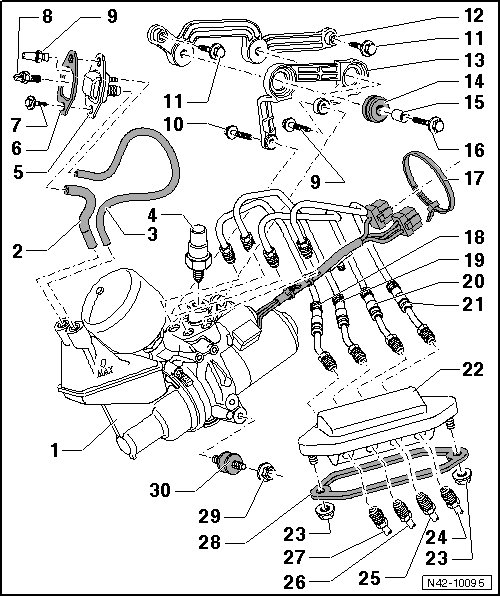

Separable Stabilizer Bar Motor Pump Assembly Overview
Separable Stabilizer Bar Motor Pump Assembly Overview

1 Motor pump assembly
With:
• Stabilizer decoupling pump (V326)
• Front axle stabilizer decoupling switching valve (N399)
• Rear axle stabilizer decoupling switching valve (N400)
• These components can be tested in "Guided Fault Finding" using the vehicle diagnosis, testing and information system (VAS 5051).
Component location:
Behind left side rear panel trim.
2 Hose
3 Hose
• For bleeding reservoir.
4 Pressure sensor of hydraulic until for stabilizer decoupling (G486)
• 20 Nm.
• Can be tested in "Guided Fault Finding" using the vehicle diagnosis, testing and information system (VAS 5051).
5 Cover
• With oil filler hole.
6 Gasket
7 Torx bolt
• 8 Nm.
8 Plug
9 Dust filter
• 2 Nm.
10 Bolt
• M6 x 20.
• 10 Nm.
11 Bolt
• M6 x 20.
• 8 Nm.
12 Bracket
• Between body and --> [ (Item 13) Bracket ].
13 Bracket
• Between engine pump assembly and --> [ (Item 12) Bracket ].
14 Rubber bushing
15 Bushing
16 Bolt
• M6 x 30.
• 10 Nm.
17 Cable tie
18 Hydraulic line
• 15 Nm.
CAUTION!
Always observe this tightening specification or valve housing can be deformed. This would affect freedom of movement of valve piston in valve housing.
• When pressure is built up in this line, coupling disc in stabilizer bar opens at rear axle.
19 Hydraulic line
• 15 Nm.
CAUTION!
Always observe this tightening specification or valve housing can be deformed. This would affect freedom of movement of valve piston in valve housing.
• When pressure is built up in this line, coupling disc in stabilizer bar closes at rear axle.
20 Hydraulic line
• 15 Nm.
CAUTION!
Always observe this tightening specification or valve housing can be deformed. This would affect freedom of movement of valve piston in valve housing.
• When pressure is built up in this line, coupling disc in stabilizer bar opens at front axle.
21 Hydraulic line
• 15 Nm.
CAUTION!
Always observe this tightening specification or valve housing can be deformed. This would affect freedom of movement of valve piston in valve housing.
• When pressure is built up in this line, coupling disc in stabilizer bar closes at front axle.
22 Adapter
23 Nut
• 9 Nm.
24 Hydraulic line
• 15 Nm.
• When pressure is built up in this line, coupling disc in stabilizer bar closes at front axle.
25 Hydraulic line
• 15 Nm.
• When pressure is built up in this line, coupling disc in stabilizer bar opens at front axle.
26 Hydraulic line
• 15 Nm.
• When pressure is built up in this line, coupling disc in stabilizer bar closes at rear axle.
27 Hydraulic line
• 15 Nm.
• When pressure is built up in this line, coupling disc in stabilizer bar opens at rear axle.
28 Gasket
29 Nut
• 10 Nm.
30 Rubber bushing
• With locking compound (D 185 400 A2) on thread, tighten into engine pump assembly by hand.